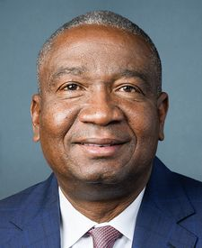
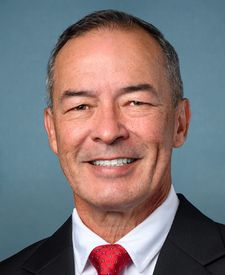

The scorecard
Every sitting senator and representative, graded from recorded votes. Tap a name to see each vote behind the grade.
Showing all 539 members.
 Glenn ThompsonR · Pennsylvania · 15th DistrictA
Glenn ThompsonR · Pennsylvania · 15th DistrictA Joe WilsonR · South Carolina · 2nd DistrictA
Joe WilsonR · South Carolina · 2nd DistrictA Andrew R. GarbarinoR · New York · 2nd DistrictA
Andrew R. GarbarinoR · New York · 2nd DistrictA Dusty JohnsonR · South Dakota · At largeA
Dusty JohnsonR · South Dakota · At largeA Michael T. McCaulR · Texas · 10th DistrictA
Michael T. McCaulR · Texas · 10th DistrictA David P. JoyceR · Ohio · 14th DistrictA
David P. JoyceR · Ohio · 14th DistrictA Jennifer A. KiggansR · Virginia · 2nd DistrictA
Jennifer A. KiggansR · Virginia · 2nd DistrictA Thomas H. Kean, Jr.R · New Jersey · 7th DistrictA
Thomas H. Kean, Jr.R · New Jersey · 7th DistrictA Todd YoungR · Indiana · SenateA
Todd YoungR · Indiana · SenateA Robert P. Bresnahan, Jr.R · Pennsylvania · 8th DistrictA
Robert P. Bresnahan, Jr.R · Pennsylvania · 8th DistrictA Jeff HurdR · Colorado · 3rd DistrictA
Jeff HurdR · Colorado · 3rd DistrictA David McCormickR · Pennsylvania · SenateA
David McCormickR · Pennsylvania · SenateA Bernie MorenoR · Ohio · SenateA
Bernie MorenoR · Ohio · SenateA Tim SheehyR · Montana · SenateA
Tim SheehyR · Montana · SenateA James C. JusticeR · West Virginia · SenateA
James C. JusticeR · West Virginia · SenateA Jon HustedR · Ohio · SenateSeat up in NovemberA
Jon HustedR · Ohio · SenateSeat up in NovemberA Ashley MoodyR · Florida · SenateSeat up in NovemberA
Ashley MoodyR · Florida · SenateSeat up in NovemberA Dan NewhouseR · Washington · 4th DistrictA
Dan NewhouseR · Washington · 4th DistrictA Gregory F. MurphyR · North Carolina · 3rd DistrictA
Gregory F. MurphyR · North Carolina · 3rd DistrictA Nick LaLotaR · New York · 1st DistrictA
Nick LaLotaR · New York · 1st DistrictA Max L. MillerR · Ohio · 7th DistrictA
Max L. MillerR · Ohio · 7th DistrictA Carlos A. GimenezR · Florida · 28th DistrictA
Carlos A. GimenezR · Florida · 28th DistrictA Shelley Moore CapitoR · West Virginia · SenateSeat up in NovemberA
Shelley Moore CapitoR · West Virginia · SenateSeat up in NovemberA Dan SullivanR · Alaska · SenateSeat up in NovemberA
Dan SullivanR · Alaska · SenateSeat up in NovemberA Charles J. "Chuck" FleischmannR · Tennessee · 3rd DistrictA
Charles J. "Chuck" FleischmannR · Tennessee · 3rd DistrictA Stephanie I. BiceR · Oklahoma · 5th DistrictA
Stephanie I. BiceR · Oklahoma · 5th DistrictA Ken CalvertR · California · 41st DistrictA
Ken CalvertR · California · 41st DistrictA Young KimR · California · 40th DistrictA
Young KimR · California · 40th DistrictA Blake D. MooreR · Utah · 1st DistrictA
Blake D. MooreR · Utah · 1st DistrictA David RouzerR · North Carolina · 7th DistrictA
David RouzerR · North Carolina · 7th DistrictA Tom ColeR · Oklahoma · 4th DistrictA
Tom ColeR · Oklahoma · 4th DistrictA Virginia FoxxR · North Carolina · 5th DistrictA
Virginia FoxxR · North Carolina · 5th DistrictA J. French HillR · Arkansas · 2nd DistrictA
J. French HillR · Arkansas · 2nd DistrictA Darrell IssaR · California · 48th DistrictA
Darrell IssaR · California · 48th DistrictA Robert E. LattaR · Ohio · 5th DistrictA
Robert E. LattaR · Ohio · 5th DistrictA Austin ScottR · Georgia · 8th DistrictA
Austin ScottR · Georgia · 8th DistrictA Adrian SmithR · Nebraska · 3rd DistrictA
Adrian SmithR · Nebraska · 3rd DistrictA Andy BarrR · Kentucky · 6th DistrictA
Andy BarrR · Kentucky · 6th DistrictA Cliff BentzR · Oregon · 2nd DistrictA
Cliff BentzR · Oregon · 2nd DistrictA Brett GuthrieR · Kentucky · 2nd DistrictA
Brett GuthrieR · Kentucky · 2nd DistrictA Richard HudsonR · North Carolina · 9th DistrictA
Richard HudsonR · North Carolina · 9th DistrictA Harold RogersR · Kentucky · 5th DistrictA
Harold RogersR · Kentucky · 5th DistrictA Mike RogersR · Alabama · 3rd DistrictA
Mike RogersR · Alabama · 3rd DistrictA Michael K. SimpsonR · Idaho · 2nd DistrictA
Michael K. SimpsonR · Idaho · 2nd DistrictA Ann WagnerR · Missouri · 2nd DistrictA
Ann WagnerR · Missouri · 2nd DistrictA Frank D. LucasR · Oklahoma · 3rd DistrictA
Frank D. LucasR · Oklahoma · 3rd DistrictA David KustoffR · Tennessee · 8th DistrictA
David KustoffR · Tennessee · 8th DistrictA Steve WomackR · Arkansas · 3rd DistrictA
Steve WomackR · Arkansas · 3rd DistrictA Steve ScaliseR · Louisiana · 1st DistrictA
Steve ScaliseR · Louisiana · 1st DistrictA Chuck GrassleyR · Iowa · SenateA
Chuck GrassleyR · Iowa · SenateA James E. RischR · Idaho · SenateSeat up in NovemberA
James E. RischR · Idaho · SenateSeat up in NovemberA Roger F. WickerR · Mississippi · SenateA
Roger F. WickerR · Mississippi · SenateA Carol D. MillerR · West Virginia · 1st DistrictA
Carol D. MillerR · West Virginia · 1st DistrictA Dan CrenshawR · Texas · 2nd DistrictA
Dan CrenshawR · Texas · 2nd DistrictA Jake EllzeyR · Texas · 6th DistrictA
Jake EllzeyR · Texas · 6th DistrictA Sam GravesR · Missouri · 6th DistrictA
Sam GravesR · Missouri · 6th DistrictA Jerry MoranR · Kansas · SenateA
Jerry MoranR · Kansas · SenateA Neal P. DunnR · Florida · 2nd DistrictA
Neal P. DunnR · Florida · 2nd DistrictA Mike FloodR · Nebraska · 1st DistrictA
Mike FloodR · Nebraska · 1st DistrictA Rudy Yakym IIIR · Indiana · 2nd DistrictA
Rudy Yakym IIIR · Indiana · 2nd DistrictA John CornynR · Texas · SenateSeat up in NovemberA
John CornynR · Texas · SenateSeat up in NovemberA Ashley HinsonR · Iowa · 2nd DistrictA
Ashley HinsonR · Iowa · 2nd DistrictA Robert J. WittmanR · Virginia · 1st DistrictA
Robert J. WittmanR · Virginia · 1st DistrictA Randy FeenstraR · Iowa · 4th DistrictA
Randy FeenstraR · Iowa · 4th DistrictA Earl L. "Buddy" CarterR · Georgia · 1st DistrictA
Earl L. "Buddy" CarterR · Georgia · 1st DistrictA David G. ValadaoR · California · 22nd DistrictA
David G. ValadaoR · California · 22nd DistrictA Vern BuchananR · Florida · 16th DistrictA
Vern BuchananR · Florida · 16th DistrictA Kevin KileyI · California · 3rd DistrictA
Kevin KileyI · California · 3rd DistrictA Michael R. TurnerR · Ohio · 10th DistrictA
Michael R. TurnerR · Ohio · 10th DistrictA Mike KellyR · Pennsylvania · 16th DistrictA
Mike KellyR · Pennsylvania · 16th DistrictA Robert B. AderholtR · Alabama · 4th DistrictA
Robert B. AderholtR · Alabama · 4th DistrictA Guy ReschenthalerR · Pennsylvania · 14th DistrictA
Guy ReschenthalerR · Pennsylvania · 14th DistrictA Richard McCormickR · Georgia · 7th DistrictA
Richard McCormickR · Georgia · 7th DistrictA Maria Elvira SalazarR · Florida · 27th DistrictA
Maria Elvira SalazarR · Florida · 27th DistrictA Mario Diaz-BalartR · Florida · 26th DistrictA
Mario Diaz-BalartR · Florida · 26th DistrictA Mike CareyR · Ohio · 15th DistrictA
Mike CareyR · Ohio · 15th DistrictA Don BaconR · Nebraska · 2nd DistrictA
Don BaconR · Nebraska · 2nd DistrictA Bryan SteilR · Wisconsin · 1st DistrictA
Bryan SteilR · Wisconsin · 1st DistrictA Bruce WestermanR · Arkansas · 4th DistrictA
Bruce WestermanR · Arkansas · 4th DistrictA Mark E. AmodeiR · Nevada · 2nd DistrictA
Mark E. AmodeiR · Nevada · 2nd DistrictA Tim WalbergR · Michigan · 5th DistrictA
Tim WalbergR · Michigan · 5th DistrictA Juan CiscomaniR · Arizona · 6th DistrictA
Juan CiscomaniR · Arizona · 6th DistrictA Nathaniel MoranR · Texas · 1st DistrictA
Nathaniel MoranR · Texas · 1st DistrictA Chuck EdwardsR · North Carolina · 11th DistrictA
Chuck EdwardsR · North Carolina · 11th DistrictA John HoevenR · North Dakota · SenateA
John HoevenR · North Dakota · SenateA Joni ErnstR · Iowa · SenateSeat up in NovemberA
Joni ErnstR · Iowa · SenateSeat up in NovemberA John H. RutherfordR · Florida · 5th DistrictA
John H. RutherfordR · Florida · 5th DistrictA Tom EmmerR · Minnesota · 6th DistrictA
Tom EmmerR · Minnesota · 6th DistrictA Darin LaHoodR · Illinois · 16th DistrictA
Darin LaHoodR · Illinois · 16th DistrictA John KennedyR · Louisiana · SenateA
John KennedyR · Louisiana · SenateA Mike RoundsR · South Dakota · SenateSeat up in NovemberA
Mike RoundsR · South Dakota · SenateSeat up in NovemberA John R. CurtisR · Utah · SenateA
John R. CurtisR · Utah · SenateA Kevin CramerR · North Dakota · SenateA
Kevin CramerR · North Dakota · SenateA Nicole MalliotakisR · New York · 11th DistrictA
Nicole MalliotakisR · New York · 11th DistrictA Jack BergmanR · Michigan · 1st DistrictA
Jack BergmanR · Michigan · 1st DistrictA Eric A. "Rick" CrawfordR · Arkansas · 1st DistrictA
Eric A. "Rick" CrawfordR · Arkansas · 1st DistrictA Trent KellyR · Mississippi · 1st DistrictA
Trent KellyR · Mississippi · 1st DistrictA Elise M. StefanikR · New York · 21st DistrictA
Elise M. StefanikR · New York · 21st DistrictA Erin HouchinR · Indiana · 9th DistrictA
Erin HouchinR · Indiana · 9th DistrictA Dale W. StrongR · Alabama · 5th DistrictA
Dale W. StrongR · Alabama · 5th DistrictA Mitch McConnellR · Kentucky · SenateSeat up in NovemberA
Mitch McConnellR · Kentucky · SenateSeat up in NovemberA Pete RickettsR · Nebraska · SenateSeat up in NovemberA
Pete RickettsR · Nebraska · SenateSeat up in NovemberA Christopher H. SmithR · New Jersey · 4th DistrictA
Christopher H. SmithR · New Jersey · 4th DistrictA Lloyd SmuckerR · Pennsylvania · 11th DistrictA
Lloyd SmuckerR · Pennsylvania · 11th DistrictA Mariannette Miller-MeeksR · Iowa · 1st DistrictA
Mariannette Miller-MeeksR · Iowa · 1st DistrictA John JamesR · Michigan · 10th DistrictA
John JamesR · Michigan · 10th DistrictA John ThuneR · South Dakota · SenateA
John ThuneR · South Dakota · SenateA Tim ScottR · South Carolina · SenateA
Tim ScottR · South Carolina · SenateA John R. CarterR · Texas · 31st DistrictA
John R. CarterR · Texas · 31st DistrictA Zachary NunnR · Iowa · 3rd DistrictA
Zachary NunnR · Iowa · 3rd DistrictA Derrick Van OrdenR · Wisconsin · 3rd DistrictA
Derrick Van OrdenR · Wisconsin · 3rd DistrictA Claudia TenneyR · New York · 24th DistrictA
Claudia TenneyR · New York · 24th DistrictA August PflugerR · Texas · 11th DistrictA
August PflugerR · Texas · 11th DistrictA Lisa C. McClainR · Michigan · 9th DistrictA
Lisa C. McClainR · Michigan · 9th DistrictA Tom CottonR · Arkansas · SenateSeat up in NovemberA
Tom CottonR · Arkansas · SenateSeat up in NovemberA Mike CrapoR · Idaho · SenateA
Mike CrapoR · Idaho · SenateA Deb FischerR · Nebraska · SenateA
Deb FischerR · Nebraska · SenateA Cindy Hyde-SmithR · Mississippi · SenateSeat up in NovemberA
Cindy Hyde-SmithR · Mississippi · SenateSeat up in NovemberA Rick W. AllenR · Georgia · 12th DistrictA
Rick W. AllenR · Georgia · 12th DistrictA Glenn GrothmanR · Wisconsin · 6th DistrictA
Glenn GrothmanR · Wisconsin · 6th DistrictA Scott FranklinR · Florida · 18th DistrictA
Scott FranklinR · Florida · 18th DistrictA Pat FallonR · Texas · 4th DistrictA
Pat FallonR · Texas · 4th DistrictA Troy BaldersonR · Ohio · 12th DistrictA
Troy BaldersonR · Ohio · 12th DistrictA Jay ObernolteR · California · 23rd DistrictA
Jay ObernolteR · California · 23rd DistrictA Michael LawlerR · New York · 17th DistrictA
Michael LawlerR · New York · 17th DistrictA John R. MoolenaarR · Michigan · 2nd DistrictA
John R. MoolenaarR · Michigan · 2nd DistrictA Beth Van DuyneR · Texas · 24th DistrictA
Beth Van DuyneR · Texas · 24th DistrictA Pete SessionsR · Texas · 17th DistrictA
Pete SessionsR · Texas · 17th DistrictA Gary J. PalmerR · Alabama · 6th DistrictA
Gary J. PalmerR · Alabama · 6th DistrictA Daniel MeuserR · Pennsylvania · 9th DistrictA
Daniel MeuserR · Pennsylvania · 9th DistrictA Bill CassidyR · Louisiana · SenateSeat up in NovemberA
Bill CassidyR · Louisiana · SenateSeat up in NovemberA Vince FongR · California · 20th DistrictA
Vince FongR · California · 20th DistrictA Mark AlfordR · Missouri · 4th DistrictA
Mark AlfordR · Missouri · 4th DistrictA Nicholas A. LangworthyR · New York · 23rd DistrictA
Nicholas A. LangworthyR · New York · 23rd DistrictA John BoozmanR · Arkansas · SenateA
John BoozmanR · Arkansas · SenateA Burgess OwensR · Utah · 4th DistrictA
Burgess OwensR · Utah · 4th DistrictA Bill HuizengaR · Michigan · 4th DistrictA
Bill HuizengaR · Michigan · 4th DistrictA Barry LoudermilkR · Georgia · 11th DistrictA
Barry LoudermilkR · Georgia · 11th DistrictA James LankfordR · Oklahoma · SenateA
James LankfordR · Oklahoma · SenateA Steve DainesR · Montana · SenateSeat up in NovemberA
Steve DainesR · Montana · SenateSeat up in NovemberA Scott FitzgeraldR · Wisconsin · 5th DistrictA
Scott FitzgeraldR · Wisconsin · 5th DistrictA Morgan LuttrellR · Texas · 8th DistrictA
Morgan LuttrellR · Texas · 8th DistrictA Celeste MaloyR · Utah · 2nd DistrictA
Celeste MaloyR · Utah · 2nd DistrictA Ronny JacksonR · Texas · 13th DistrictA
Ronny JacksonR · Texas · 13th DistrictA Julia LetlowR · Louisiana · 5th DistrictA
Julia LetlowR · Louisiana · 5th DistrictA Mike JohnsonR · Louisiana · 4th DistrictA
Mike JohnsonR · Louisiana · 4th DistrictA Michael GuestR · Mississippi · 3rd DistrictA
Michael GuestR · Mississippi · 3rd DistrictA James R. BairdR · Indiana · 4th DistrictA
James R. BairdR · Indiana · 4th DistrictA Victoria SpartzR · Indiana · 5th DistrictA
Victoria SpartzR · Indiana · 5th DistrictA Laurel M. LeeR · Florida · 15th DistrictA
Laurel M. LeeR · Florida · 15th DistrictA John BarrassoR · Wyoming · SenateA
John BarrassoR · Wyoming · SenateA Craig A. GoldmanR · Texas · 12th DistrictA
Craig A. GoldmanR · Texas · 12th DistrictA Michael BaumgartnerR · Washington · 5th DistrictA
Michael BaumgartnerR · Washington · 5th DistrictA Mike HaridopolosR · Florida · 8th DistrictA
Mike HaridopolosR · Florida · 8th DistrictA Tim MooreR · North Carolina · 14th DistrictA
Tim MooreR · North Carolina · 14th DistrictA Mark B. MessmerR · Indiana · 8th DistrictA
Mark B. MessmerR · Indiana · 8th DistrictA Troy DowningR · Montana · 2nd DistrictA
Troy DowningR · Montana · 2nd DistrictA Julie FedorchakR · North Dakota · At largeA
Julie FedorchakR · North Dakota · At largeA Jefferson ShreveR · Indiana · 6th DistrictA
Jefferson ShreveR · Indiana · 6th DistrictA Ryan MackenzieR · Pennsylvania · 7th DistrictA
Ryan MackenzieR · Pennsylvania · 7th DistrictA Pete StauberR · Minnesota · 8th DistrictA
Pete StauberR · Minnesota · 8th DistrictA Lance GoodenR · Texas · 5th DistrictA
Lance GoodenR · Texas · 5th DistrictA Monica De La CruzR · Texas · 15th DistrictA
Monica De La CruzR · Texas · 15th DistrictA Ron EstesR · Kansas · 4th DistrictA
Ron EstesR · Kansas · 4th DistrictA Mike BostR · Illinois · 12th DistrictA
Mike BostR · Illinois · 12th DistrictA Jason SmithR · Missouri · 8th DistrictA
Jason SmithR · Missouri · 8th DistrictA Jim BanksR · Indiana · SenateA
Jim BanksR · Indiana · SenateA Scott DesJarlaisR · Tennessee · 4th DistrictA
Scott DesJarlaisR · Tennessee · 4th DistrictA Daniel WebsterR · Florida · 11th DistrictA
Daniel WebsterR · Florida · 11th DistrictA Ted BuddR · North Carolina · SenateA
Ted BuddR · North Carolina · SenateA Thom TillisR · North Carolina · SenateSeat up in NovemberA
Thom TillisR · North Carolina · SenateSeat up in NovemberA Randy FineR · Florida · 6th DistrictA
Randy FineR · Florida · 6th DistrictA Nancy MaceR · South Carolina · 1st DistrictA
Nancy MaceR · South Carolina · 1st DistrictA Mike EzellR · Mississippi · 4th DistrictA
Mike EzellR · Mississippi · 4th DistrictA Rick ScottR · Florida · SenateA
Rick ScottR · Florida · SenateA Ted CruzR · Texas · SenateA
Ted CruzR · Texas · SenateA Katie Boyd BrittR · Alabama · SenateA
Katie Boyd BrittR · Alabama · SenateA John JoyceR · Pennsylvania · 13th DistrictA
John JoyceR · Pennsylvania · 13th DistrictA Ryan K. ZinkeR · Montana · 1st DistrictA
Ryan K. ZinkeR · Montana · 1st DistrictA Brian BabinR · Texas · 36th DistrictA
Brian BabinR · Texas · 36th DistrictA David SchweikertR · Arizona · 1st DistrictA
David SchweikertR · Arizona · 1st DistrictA William R. Timmons IVR · South Carolina · 4th DistrictA
William R. Timmons IVR · South Carolina · 4th DistrictA John W. RoseR · Tennessee · 6th DistrictA
John W. RoseR · Tennessee · 6th DistrictA Jodey C. ArringtonR · Texas · 19th DistrictA
Jodey C. ArringtonR · Texas · 19th DistrictA Matt Van EppsR · Tennessee · 7th DistrictA
Matt Van EppsR · Tennessee · 7th DistrictA Randy K. Weber, Sr.R · Texas · 14th DistrictA
Randy K. Weber, Sr.R · Texas · 14th DistrictA Diana HarshbargerR · Tennessee · 1st DistrictA
Diana HarshbargerR · Tennessee · 1st DistrictA Tom McClintockR · California · 5th DistrictA
Tom McClintockR · California · 5th DistrictA Marlin A. StutzmanR · Indiana · 3rd DistrictA-
Marlin A. StutzmanR · Indiana · 3rd DistrictA- Brad KnottR · North Carolina · 13th DistrictA-
Brad KnottR · North Carolina · 13th DistrictA- Derek SchmidtR · Kansas · 2nd DistrictA-
Derek SchmidtR · Kansas · 2nd DistrictA- Gus M. BilirakisR · Florida · 12th DistrictA-
Gus M. BilirakisR · Florida · 12th DistrictA- Kat CammackR · Florida · 3rd DistrictA-
Kat CammackR · Florida · 3rd DistrictA- Michelle FischbachR · Minnesota · 7th DistrictA-
Michelle FischbachR · Minnesota · 7th DistrictA- Ron JohnsonR · Wisconsin · SenateA-
Ron JohnsonR · Wisconsin · SenateA- Bill HagertyR · Tennessee · SenateSeat up in NovemberA-
Bill HagertyR · Tennessee · SenateSeat up in NovemberA- Roger WilliamsR · Texas · 25th DistrictA-
Roger WilliamsR · Texas · 25th DistrictA- Kevin HernR · Oklahoma · 1st DistrictA-
Kevin HernR · Oklahoma · 1st DistrictA- Brian K. FitzpatrickR · Pennsylvania · 1st DistrictA-
Brian K. FitzpatrickR · Pennsylvania · 1st DistrictA- Brian J. MastR · Florida · 21st DistrictA-
Brian J. MastR · Florida · 21st DistrictA- Gabe EvansR · Colorado · 8th DistrictA-
Gabe EvansR · Colorado · 8th DistrictA- Michael A. RulliR · Ohio · 6th DistrictA-
Michael A. RulliR · Ohio · 6th DistrictA- Tracey MannR · Kansas · 1st DistrictA-
Tracey MannR · Kansas · 1st DistrictA- Jefferson Van DrewR · New Jersey · 2nd DistrictA-
Jefferson Van DrewR · New Jersey · 2nd DistrictA- Tommy TubervilleR · Alabama · SenateSeat up in NovemberA-
Tommy TubervilleR · Alabama · SenateSeat up in NovemberA- Marsha BlackburnR · Tennessee · SenateA-
Marsha BlackburnR · Tennessee · SenateA- Barry MooreR · Alabama · 1st DistrictA-
Barry MooreR · Alabama · 1st DistrictA- Russ FulcherR · Idaho · 1st DistrictA-
Russ FulcherR · Idaho · 1st DistrictA- Jim JordanR · Ohio · 4th DistrictA-
Jim JordanR · Ohio · 4th DistrictA- Brad FinstadR · Minnesota · 1st DistrictA-
Brad FinstadR · Minnesota · 1st DistrictA- James ComerR · Kentucky · 1st DistrictA-
James ComerR · Kentucky · 1st DistrictA- Andy HarrisR · Maryland · 1st DistrictA-
Andy HarrisR · Maryland · 1st DistrictA- Roger MarshallR · Kansas · SenateSeat up in NovemberA-
Roger MarshallR · Kansas · SenateSeat up in NovemberA- Eric SchmittR · Missouri · SenateA-
Eric SchmittR · Missouri · SenateA- Brandon GillR · Texas · 26th DistrictA-
Brandon GillR · Texas · 26th DistrictA- Mark HarrisR · North Carolina · 8th DistrictA-
Mark HarrisR · North Carolina · 8th DistrictA- Addison P. McDowellR · North Carolina · 6th DistrictA-
Addison P. McDowellR · North Carolina · 6th DistrictA- John J. McGuire IIIR · Virginia · 5th DistrictA-
John J. McGuire IIIR · Virginia · 5th DistrictA- David J. TaylorR · Ohio · 2nd DistrictA-
David J. TaylorR · Ohio · 2nd DistrictA- Sheri BiggsR · South Carolina · 3rd DistrictA-
Sheri BiggsR · South Carolina · 3rd DistrictA- Jeff CrankR · Colorado · 5th DistrictA-
Jeff CrankR · Colorado · 5th DistrictA- Abraham J. HamadehR · Arizona · 8th DistrictA-
Abraham J. HamadehR · Arizona · 8th DistrictA- Pat HarriganR · North Carolina · 10th DistrictA-
Pat HarriganR · North Carolina · 10th DistrictA- Brian JackR · Georgia · 3rd DistrictA-
Brian JackR · Georgia · 3rd DistrictA- Riley M. MooreR · West Virginia · 2nd DistrictA-
Riley M. MooreR · West Virginia · 2nd DistrictA- Tony WiedR · Wisconsin · 8th DistrictA-
Tony WiedR · Wisconsin · 8th DistrictA- Robert F. Onder, Jr.R · Missouri · 3rd DistrictA-
Robert F. Onder, Jr.R · Missouri · 3rd DistrictA- Jimmy PatronisR · Florida · 1st DistrictA-
Jimmy PatronisR · Florida · 1st DistrictA- Mary E. MillerR · Illinois · 15th DistrictA-
Mary E. MillerR · Illinois · 15th DistrictA- Russell FryR · South Carolina · 7th DistrictA-
Russell FryR · South Carolina · 7th DistrictA- Susan M. CollinsR · Maine · SenateSeat up in NovemberA-
Susan M. CollinsR · Maine · SenateSeat up in NovemberA- Byron DonaldsR · Florida · 19th DistrictB+
Byron DonaldsR · Florida · 19th DistrictB+ Andrew OglesR · Tennessee · 5th DistrictB+
Andrew OglesR · Tennessee · 5th DistrictB+ Ben ClineR · Virginia · 6th DistrictB+
Ben ClineR · Virginia · 6th DistrictB+ H. Morgan GriffithR · Virginia · 9th DistrictB+
H. Morgan GriffithR · Virginia · 9th DistrictB+ Clay HigginsR · Louisiana · 3rd DistrictB+
Clay HigginsR · Louisiana · 3rd DistrictB+ Mike CollinsR · Georgia · 10th DistrictB+
Mike CollinsR · Georgia · 10th DistrictB+ Andrew S. ClydeR · Georgia · 9th DistrictB+
Andrew S. ClydeR · Georgia · 9th DistrictB+- Nicholas J. Begich IIIR · Alaska · At largeB+
 Michael CloudR · Texas · 27th DistrictB+
Michael CloudR · Texas · 27th DistrictB+ Aaron BeanR · Florida · 4th DistrictB+
Aaron BeanR · Florida · 4th DistrictB+ Scott PerryR · Pennsylvania · 10th DistrictB+
Scott PerryR · Pennsylvania · 10th DistrictB+ Cory MillsR · Florida · 7th DistrictB+
Cory MillsR · Florida · 7th DistrictB+ Wesley HuntR · Texas · 38th DistrictB+
Wesley HuntR · Texas · 38th DistrictB+ Thomas P. TiffanyR · Wisconsin · 7th DistrictB+
Thomas P. TiffanyR · Wisconsin · 7th DistrictB+ Mike KennedyR · Utah · 3rd DistrictB+
Mike KennedyR · Utah · 3rd DistrictB+ Cynthia M. LummisR · Wyoming · SenateSeat up in NovemberB+
Cynthia M. LummisR · Wyoming · SenateSeat up in NovemberB+ Lauren BoebertR · Colorado · 4th DistrictB+
Lauren BoebertR · Colorado · 4th DistrictB+ Harriet M. HagemanR · Wyoming · At largeB+
Harriet M. HagemanR · Wyoming · At largeB+ Troy E. NehlsR · Texas · 22nd DistrictB
Troy E. NehlsR · Texas · 22nd DistrictB Lisa MurkowskiR · Alaska · SenateB
Lisa MurkowskiR · Alaska · SenateB Tom BarrettR · Michigan · 7th DistrictB
Tom BarrettR · Michigan · 7th DistrictB Tim BurchettR · Tennessee · 2nd DistrictB
Tim BurchettR · Tennessee · 2nd DistrictB Ralph NormanR · South Carolina · 5th DistrictB
Ralph NormanR · South Carolina · 5th DistrictB Josh BrecheenR · Oklahoma · 2nd DistrictB
Josh BrecheenR · Oklahoma · 2nd DistrictB W. Gregory SteubeR · Florida · 17th DistrictB
W. Gregory SteubeR · Florida · 17th DistrictB Keith SelfR · Texas · 3rd DistrictB
Keith SelfR · Texas · 3rd DistrictB Paul A. GosarR · Arizona · 9th DistrictB
Paul A. GosarR · Arizona · 9th DistrictB Warren DavidsonR · Ohio · 8th DistrictB
Warren DavidsonR · Ohio · 8th DistrictB Andy BiggsR · Arizona · 5th DistrictB
Andy BiggsR · Arizona · 5th DistrictB Josh HawleyR · Missouri · SenateB
Josh HawleyR · Missouri · SenateB Chip RoyR · Texas · 21st DistrictB
Chip RoyR · Texas · 21st DistrictB Eric BurlisonR · Missouri · 7th DistrictB
Eric BurlisonR · Missouri · 7th DistrictB Anna Paulina LunaR · Florida · 13th DistrictB-
Anna Paulina LunaR · Florida · 13th DistrictB- Mike LeeR · Utah · SenateB-
Mike LeeR · Utah · SenateB- Clay FullerR · Georgia · 14th DistrictB-
Clay FullerR · Georgia · 14th DistrictB- Elijah CraneR · Arizona · 2nd DistrictB-
Elijah CraneR · Arizona · 2nd DistrictB- Donald G. DavisD · North Carolina · 1st DistrictC
Donald G. DavisD · North Carolina · 1st DistrictC Marie Gluesenkamp PerezD · Washington · 3rd DistrictC
Marie Gluesenkamp PerezD · Washington · 3rd DistrictC Jared F. GoldenD · Maine · 2nd DistrictD
Jared F. GoldenD · Maine · 2nd DistrictD Greg LandsmanD · Ohio · 1st DistrictD
Greg LandsmanD · Ohio · 1st DistrictD Laura GillenD · New York · 4th DistrictD
Laura GillenD · New York · 4th DistrictD Patrick RyanD · New York · 18th DistrictD
Patrick RyanD · New York · 18th DistrictD John FettermanD · Pennsylvania · SenateD
John FettermanD · Pennsylvania · SenateD Jared MoskowitzD · Florida · 23rd DistrictD-
Jared MoskowitzD · Florida · 23rd DistrictD- Henry CuellarD · Texas · 28th DistrictD-
Henry CuellarD · Texas · 28th DistrictD- Rand PaulR · Kentucky · SenateF
Rand PaulR · Kentucky · SenateF Eric SorensenD · Illinois · 17th DistrictF
Eric SorensenD · Illinois · 17th DistrictF Jacky RosenD · Nevada · SenateF
Jacky RosenD · Nevada · SenateF Hillary J. ScholtenD · Michigan · 3rd DistrictF
Hillary J. ScholtenD · Michigan · 3rd DistrictF Emilia Strong SykesD · Ohio · 13th DistrictF
Emilia Strong SykesD · Ohio · 13th DistrictF Gabe VasquezD · New Mexico · 2nd DistrictF
Gabe VasquezD · New Mexico · 2nd DistrictF Vicente GonzalezD · Texas · 34th DistrictF
Vicente GonzalezD · Texas · 34th DistrictF Thomas R. SuozziD · New York · 3rd DistrictF
Thomas R. SuozziD · New York · 3rd DistrictF Nikki BudzinskiD · Illinois · 13th DistrictF
Nikki BudzinskiD · Illinois · 13th DistrictF Kim SchrierD · Washington · 8th DistrictF
Kim SchrierD · Washington · 8th DistrictF Adam GrayD · California · 13th DistrictF
Adam GrayD · California · 13th DistrictF Josh GottheimerD · New Jersey · 5th DistrictF
Josh GottheimerD · New Jersey · 5th DistrictF Susie LeeD · Nevada · 3rd DistrictF
Susie LeeD · Nevada · 3rd DistrictF Chris PappasD · New Hampshire · 1st DistrictF
Chris PappasD · New Hampshire · 1st DistrictF Thomas MassieR · Kentucky · 4th DistrictF
Thomas MassieR · Kentucky · 4th DistrictF Darren SotoD · Florida · 9th DistrictF
Darren SotoD · Florida · 9th DistrictF Greg StantonD · Arizona · 4th DistrictF
Greg StantonD · Arizona · 4th DistrictF Mike LevinD · California · 49th DistrictF
Mike LevinD · California · 49th DistrictF Marcy KapturD · Ohio · 9th DistrictF
Marcy KapturD · Ohio · 9th DistrictF Angie CraigD · Minnesota · 2nd DistrictF
Angie CraigD · Minnesota · 2nd DistrictF Steven HorsfordD · Nevada · 4th DistrictF
Steven HorsfordD · Nevada · 4th DistrictF Richard BlumenthalD · Connecticut · SenateF
Richard BlumenthalD · Connecticut · SenateF Frederica S. WilsonD · Florida · 24th DistrictF
Frederica S. WilsonD · Florida · 24th DistrictF Brendan F. BoyleD · Pennsylvania · 2nd DistrictF
Brendan F. BoyleD · Pennsylvania · 2nd DistrictF Charles E. SchumerD · New York · SenateF
Charles E. SchumerD · New York · SenateF Jim CostaD · California · 21st DistrictF
Jim CostaD · California · 21st DistrictF Andrea SalinasD · Oregon · 6th DistrictF
Andrea SalinasD · Oregon · 6th DistrictF April McClain DelaneyD · Maryland · 6th DistrictF
April McClain DelaneyD · Maryland · 6th DistrictF Elissa SlotkinD · Michigan · SenateF
Elissa SlotkinD · Michigan · SenateF Brittany PettersenD · Colorado · 7th DistrictF
Brittany PettersenD · Colorado · 7th DistrictF Daniel S. GoldmanD · New York · 10th DistrictF
Daniel S. GoldmanD · New York · 10th DistrictF Seth MagazinerD · Rhode Island · 2nd DistrictF
Seth MagazinerD · Rhode Island · 2nd DistrictF Josh HarderD · California · 9th DistrictF
Josh HarderD · California · 9th DistrictF Frank J. MrvanD · Indiana · 1st DistrictF
Frank J. MrvanD · Indiana · 1st DistrictF Mark KellyD · Arizona · SenateF
Mark KellyD · Arizona · SenateF Jimmy PanettaD · California · 19th DistrictF
Jimmy PanettaD · California · 19th DistrictF Eugene Simon VindmanD · Virginia · 7th DistrictF
Eugene Simon VindmanD · Virginia · 7th DistrictF- Shomari FiguresD · Alabama · 2nd DistrictF
 Kirsten E. GillibrandD · New York · SenateF
Kirsten E. GillibrandD · New York · SenateF Josh RileyD · New York · 19th DistrictF
Josh RileyD · New York · 19th DistrictF Sharice DavidsD · Kansas · 3rd DistrictF
Sharice DavidsD · Kansas · 3rd DistrictF Donald NorcrossD · New Jersey · 1st DistrictF
Donald NorcrossD · New Jersey · 1st DistrictF Debbie Wasserman SchultzD · Florida · 25th DistrictF
Debbie Wasserman SchultzD · Florida · 25th DistrictF Suhas SubramanyamD · Virginia · 10th DistrictF
Suhas SubramanyamD · Virginia · 10th DistrictF Bradley Scott SchneiderD · Illinois · 10th DistrictF
Bradley Scott SchneiderD · Illinois · 10th DistrictF Ted LieuD · California · 36th DistrictF
Ted LieuD · California · 36th DistrictF Shri ThanedarD · Michigan · 13th DistrictF
Shri ThanedarD · Michigan · 13th DistrictF Ruben GallegoD · Arizona · SenateF
Ruben GallegoD · Arizona · SenateF Ed CaseD · Hawaii · 1st DistrictF
Ed CaseD · Hawaii · 1st DistrictF Kristen McDonald RivetD · Michigan · 8th DistrictF
Kristen McDonald RivetD · Michigan · 8th DistrictF Marc A. VeaseyD · Texas · 33rd DistrictF
Marc A. VeaseyD · Texas · 33rd DistrictF Lois FrankelD · Florida · 22nd DistrictF
Lois FrankelD · Florida · 22nd DistrictF Sanford D. Bishop, Jr.D · Georgia · 2nd DistrictF
Sanford D. Bishop, Jr.D · Georgia · 2nd DistrictF James R. WalkinshawD · Virginia · 11th DistrictF
James R. WalkinshawD · Virginia · 11th DistrictF Amy KlobucharD · Minnesota · SenateF
Amy KlobucharD · Minnesota · SenateF Catherine Cortez MastoD · Nevada · SenateF
Catherine Cortez MastoD · Nevada · SenateF Margaret Wood HassanD · New Hampshire · SenateF
Margaret Wood HassanD · New Hampshire · SenateF Haley M. StevensD · Michigan · 11th DistrictF
Haley M. StevensD · Michigan · 11th DistrictF Joseph D. MorelleD · New York · 25th DistrictF
Joseph D. MorelleD · New York · 25th DistrictF Scott H. PetersD · California · 50th DistrictF
Scott H. PetersD · California · 50th DistrictF Joe CourtneyD · Connecticut · 2nd DistrictF
Joe CourtneyD · Connecticut · 2nd DistrictF Kathy CastorD · Florida · 14th DistrictF
Kathy CastorD · Florida · 14th DistrictF Robert MenendezD · New Jersey · 8th DistrictF
Robert MenendezD · New Jersey · 8th DistrictF Terri A. SewellD · Alabama · 7th DistrictF
Terri A. SewellD · Alabama · 7th DistrictF Christopher R. DeluzioD · Pennsylvania · 17th DistrictF
Christopher R. DeluzioD · Pennsylvania · 17th DistrictF George WhitesidesD · California · 27th DistrictF
George WhitesidesD · California · 27th DistrictF Glenn IveyD · Maryland · 4th DistrictF
Glenn IveyD · Maryland · 4th DistrictF Raul RuizD · California · 25th DistrictF
Raul RuizD · California · 25th DistrictF Norma J. TorresD · California · 35th DistrictF
Norma J. TorresD · California · 35th DistrictF Marilyn StricklandD · Washington · 10th DistrictF
Marilyn StricklandD · Washington · 10th DistrictF Dina TitusD · Nevada · 1st DistrictF
Dina TitusD · Nevada · 1st DistrictF Jon OssoffD · Georgia · SenateSeat up in NovemberF
Jon OssoffD · Georgia · SenateSeat up in NovemberF William R. KeatingD · Massachusetts · 9th DistrictF
William R. KeatingD · Massachusetts · 9th DistrictF Steny H. HoyerD · Maryland · 5th DistrictF
Steny H. HoyerD · Maryland · 5th DistrictF Nancy PelosiD · California · 11th DistrictF
Nancy PelosiD · California · 11th DistrictF J. Luis CorreaD · California · 46th DistrictF
J. Luis CorreaD · California · 46th DistrictF Salud O. CarbajalD · California · 24th DistrictF
Salud O. CarbajalD · California · 24th DistrictF Gary C. PetersD · Michigan · SenateSeat up in NovemberF
Gary C. PetersD · Michigan · SenateSeat up in NovemberF Mark R. WarnerD · Virginia · SenateSeat up in NovemberF
Mark R. WarnerD · Virginia · SenateSeat up in NovemberF Pete AguilarD · California · 33rd DistrictF
Pete AguilarD · California · 33rd DistrictF Brad ShermanD · California · 32nd DistrictF
Brad ShermanD · California · 32nd DistrictF Stephen F. LynchD · Massachusetts · 8th DistrictF
Stephen F. LynchD · Massachusetts · 8th DistrictF Chrissy HoulahanD · Pennsylvania · 6th DistrictF
Chrissy HoulahanD · Pennsylvania · 6th DistrictF Christopher A. CoonsD · Delaware · SenateSeat up in NovemberF
Christopher A. CoonsD · Delaware · SenateSeat up in NovemberF Julia BrownleyD · California · 26th DistrictF
Julia BrownleyD · California · 26th DistrictF Rick LarsenD · Washington · 2nd DistrictF
Rick LarsenD · Washington · 2nd DistrictF James E. ClyburnD · South Carolina · 6th DistrictF
James E. ClyburnD · South Carolina · 6th DistrictF Emanuel CleaverD · Missouri · 5th DistrictF
Emanuel CleaverD · Missouri · 5th DistrictF Teresa Leger FernandezD · New Mexico · 3rd DistrictF
Teresa Leger FernandezD · New Mexico · 3rd DistrictF Deborah K. RossD · North Carolina · 2nd DistrictF
Deborah K. RossD · North Carolina · 2nd DistrictF Timothy M. KennedyD · New York · 26th DistrictF
Timothy M. KennedyD · New York · 26th DistrictF Lizzie FletcherD · Texas · 7th DistrictF
Lizzie FletcherD · Texas · 7th DistrictF Jahana HayesD · Connecticut · 5th DistrictF
Jahana HayesD · Connecticut · 5th DistrictF John B. LarsonD · Connecticut · 1st DistrictF
John B. LarsonD · Connecticut · 1st DistrictF Seth MoultonD · Massachusetts · 6th DistrictF
Seth MoultonD · Massachusetts · 6th DistrictF Morgan McGarveyD · Kentucky · 3rd DistrictF
Morgan McGarveyD · Kentucky · 3rd DistrictF Mike ThompsonD · California · 4th DistrictF
Mike ThompsonD · California · 4th DistrictF James A. HimesD · Connecticut · 4th DistrictF
James A. HimesD · Connecticut · 4th DistrictF Juan VargasD · California · 52nd DistrictF
Juan VargasD · California · 52nd DistrictF Johnny Olszewski, Jr.D · Maryland · 2nd DistrictF
Johnny Olszewski, Jr.D · Maryland · 2nd DistrictF Tim KaineD · Virginia · SenateF
Tim KaineD · Virginia · SenateF Ami BeraD · California · 6th DistrictF
Ami BeraD · California · 6th DistrictF Raja KrishnamoorthiD · Illinois · 8th DistrictF
Raja KrishnamoorthiD · Illinois · 8th DistrictF Gregory W. MeeksD · New York · 5th DistrictF
Gregory W. MeeksD · New York · 5th DistrictF John W. HickenlooperD · Colorado · SenateSeat up in NovemberF
John W. HickenlooperD · Colorado · SenateSeat up in NovemberF Alma S. AdamsD · North Carolina · 12th DistrictF
Alma S. AdamsD · North Carolina · 12th DistrictF Mike QuigleyD · Illinois · 5th DistrictF
Mike QuigleyD · Illinois · 5th DistrictF Dwight EvansD · Pennsylvania · 3rd DistrictF
Dwight EvansD · Pennsylvania · 3rd DistrictF Jack ReedD · Rhode Island · SenateSeat up in NovemberF
Jack ReedD · Rhode Island · SenateSeat up in NovemberF Hakeem S. JeffriesD · New York · 8th DistrictF
Hakeem S. JeffriesD · New York · 8th DistrictF Alex PadillaD · California · SenateF
Alex PadillaD · California · SenateF Lucy McBathD · Georgia · 6th DistrictF
Lucy McBathD · Georgia · 6th DistrictF Valerie P. FousheeD · North Carolina · 4th DistrictF
Valerie P. FousheeD · North Carolina · 4th DistrictF Suzan K. DelBeneD · Washington · 1st DistrictF
Suzan K. DelBeneD · Washington · 1st DistrictF Robert C. "Bobby" ScottD · Virginia · 3rd DistrictF
Robert C. "Bobby" ScottD · Virginia · 3rd DistrictF Rosa L. DeLauroD · Connecticut · 3rd DistrictF
Rosa L. DeLauroD · Connecticut · 3rd DistrictF Madeleine DeanD · Pennsylvania · 4th DistrictF
Madeleine DeanD · Pennsylvania · 4th DistrictF Richard E. NealD · Massachusetts · 1st DistrictF
Richard E. NealD · Massachusetts · 1st DistrictF Jill N. TokudaD · Hawaii · 2nd DistrictF
Jill N. TokudaD · Hawaii · 2nd DistrictF Jennifer L. McClellanD · Virginia · 4th DistrictF
Jennifer L. McClellanD · Virginia · 4th DistrictF Yassamin AnsariD · Arizona · 3rd DistrictF
Yassamin AnsariD · Arizona · 3rd DistrictF Bill FosterD · Illinois · 11th DistrictF
Bill FosterD · Illinois · 11th DistrictF Sean CastenD · Illinois · 6th DistrictF
Sean CastenD · Illinois · 6th DistrictF Adam SmithD · Washington · 9th DistrictF
Adam SmithD · Washington · 9th DistrictF Jason CrowD · Colorado · 6th DistrictF
Jason CrowD · Colorado · 6th DistrictF Adam B. SchiffD · California · SenateF
Adam B. SchiffD · California · SenateF Kweisi MfumeD · Maryland · 7th DistrictF
Kweisi MfumeD · Maryland · 7th DistrictF Joyce BeattyD · Ohio · 3rd DistrictF
Joyce BeattyD · Ohio · 3rd DistrictF Debbie DingellD · Michigan · 6th DistrictF
Debbie DingellD · Michigan · 6th DistrictF Shontel M. BrownD · Ohio · 11th DistrictF
Shontel M. BrownD · Ohio · 11th DistrictF George LatimerD · New York · 16th DistrictF
George LatimerD · New York · 16th DistrictF Melanie A. StansburyD · New Mexico · 1st DistrictF
Melanie A. StansburyD · New Mexico · 1st DistrictF Dave MinD · California · 47th DistrictF
Dave MinD · California · 47th DistrictF Kevin MullinD · California · 15th DistrictF
Kevin MullinD · California · 15th DistrictF Troy A. CarterD · Louisiana · 2nd DistrictF
Troy A. CarterD · Louisiana · 2nd DistrictF Jasmine CrockettD · Texas · 30th DistrictF
Jasmine CrockettD · Texas · 30th DistrictF Grace MengD · New York · 6th DistrictF
Grace MengD · New York · 6th DistrictF Frank Pallone, Jr.D · New Jersey · 6th DistrictF
Frank Pallone, Jr.D · New Jersey · 6th DistrictF Lori TrahanD · Massachusetts · 3rd DistrictF
Lori TrahanD · Massachusetts · 3rd DistrictF Sydney Kamlager-DoveD · California · 37th DistrictF
Sydney Kamlager-DoveD · California · 37th DistrictF Andy KimD · New Jersey · SenateF
Andy KimD · New Jersey · SenateF Maria CantwellD · Washington · SenateF
Maria CantwellD · Washington · SenateF Cory A. BookerD · New Jersey · SenateSeat up in NovemberF
Cory A. BookerD · New Jersey · SenateSeat up in NovemberF Lisa Blunt RochesterD · Delaware · SenateF
Lisa Blunt RochesterD · Delaware · SenateF Gilbert Ray Cisneros, Jr.D · California · 31st DistrictF
Gilbert Ray Cisneros, Jr.D · California · 31st DistrictF Sylvia R. GarciaD · Texas · 29th DistrictF
Sylvia R. GarciaD · Texas · 29th DistrictF Zoe LofgrenD · California · 18th DistrictF
Zoe LofgrenD · California · 18th DistrictF Michael F. BennetD · Colorado · SenateF
Michael F. BennetD · Colorado · SenateF Martin HeinrichD · New Mexico · SenateF
Martin HeinrichD · New Mexico · SenateF John W. MannionD · New York · 22nd DistrictF
John W. MannionD · New York · 22nd DistrictF Joe NeguseD · Colorado · 2nd DistrictF
Joe NeguseD · Colorado · 2nd DistrictF Doris O. MatsuiD · California · 7th DistrictF
Doris O. MatsuiD · California · 7th DistrictF Sheldon WhitehouseD · Rhode Island · SenateF
Sheldon WhitehouseD · Rhode Island · SenateF Betty McCollumD · Minnesota · 4th DistrictF
Betty McCollumD · Minnesota · 4th DistrictF John GaramendiD · California · 8th DistrictF
John GaramendiD · California · 8th DistrictF Jeanne ShaheenD · New Hampshire · SenateSeat up in NovemberF
Jeanne ShaheenD · New Hampshire · SenateSeat up in NovemberF Angus S. King, Jr.I · Maine · SenateF
Angus S. King, Jr.I · Maine · SenateF Janelle S. BynumD · Oregon · 5th DistrictF
Janelle S. BynumD · Oregon · 5th DistrictF Veronica EscobarD · Texas · 16th DistrictF
Veronica EscobarD · Texas · 16th DistrictF Linda T. SánchezD · California · 38th DistrictF
Linda T. SánchezD · California · 38th DistrictF Katherine M. ClarkD · Massachusetts · 5th DistrictF
Katherine M. ClarkD · Massachusetts · 5th DistrictF Mary Gay ScanlonD · Pennsylvania · 5th DistrictF
Mary Gay ScanlonD · Pennsylvania · 5th DistrictF Adriano EspaillatD · New York · 13th DistrictF
Adriano EspaillatD · New York · 13th DistrictF Robin L. KellyD · Illinois · 2nd DistrictF
Robin L. KellyD · Illinois · 2nd DistrictF Sarah McBrideD · Delaware · At largeF
Sarah McBrideD · Delaware · At largeF- Herbert C. Conaway, Jr.D · New Jersey · 3rd DistrictF
- Maggie GoodlanderD · New Hampshire · 2nd DistrictF
 Donald S. Beyer, Jr.D · Virginia · 8th DistrictF
Donald S. Beyer, Jr.D · Virginia · 8th DistrictF Val T. HoyleD · Oregon · 4th DistrictF
Val T. HoyleD · Oregon · 4th DistrictF Wesley BellD · Missouri · 1st DistrictF
Wesley BellD · Missouri · 1st DistrictF Diana DeGetteD · Colorado · 1st DistrictF
Diana DeGetteD · Colorado · 1st DistrictF Paul TonkoD · New York · 20th DistrictF
Paul TonkoD · New York · 20th DistrictF Raphael G. WarnockD · Georgia · SenateF
Raphael G. WarnockD · Georgia · SenateF Lauren UnderwoodD · Illinois · 14th DistrictF
Lauren UnderwoodD · Illinois · 14th DistrictF Ritchie TorresD · New York · 15th DistrictF
Ritchie TorresD · New York · 15th DistrictF Steve CohenD · Tennessee · 9th DistrictF
Steve CohenD · Tennessee · 9th DistrictF
Cleo FieldsD · Louisiana · 6th DistrictF Jake AuchinclossD · Massachusetts · 4th DistrictF
Jake AuchinclossD · Massachusetts · 4th DistrictF Ben Ray LujánD · New Mexico · SenateSeat up in NovemberF
Ben Ray LujánD · New Mexico · SenateSeat up in NovemberF Patty MurrayD · Washington · SenateF
Patty MurrayD · Washington · SenateF Jerrold NadlerD · New York · 12th DistrictF
Jerrold NadlerD · New York · 12th DistrictF Joaquin CastroD · Texas · 20th DistrictF
Joaquin CastroD · Texas · 20th DistrictF Bennie G. ThompsonD · Mississippi · 2nd DistrictF
Bennie G. ThompsonD · Mississippi · 2nd DistrictF Julie JohnsonD · Texas · 32nd DistrictF
Julie JohnsonD · Texas · 32nd DistrictF Al GreenD · Texas · 9th DistrictF
Al GreenD · Texas · 9th DistrictF Sara JacobsD · California · 51st DistrictF
Sara JacobsD · California · 51st DistrictF Tammy DuckworthD · Illinois · SenateF
Tammy DuckworthD · Illinois · SenateF Nellie PouD · New Jersey · 9th DistrictF
Nellie PouD · New Jersey · 9th DistrictF Robert GarciaD · California · 42nd DistrictF
Robert GarciaD · California · 42nd DistrictF Nikema WilliamsD · Georgia · 5th DistrictF
Nikema WilliamsD · Georgia · 5th DistrictF Nanette Diaz BarragánD · California · 44th DistrictF
Nanette Diaz BarragánD · California · 44th DistrictF Lloyd DoggettD · Texas · 37th DistrictF
Lloyd DoggettD · Texas · 37th DistrictF Jimmy GomezD · California · 34th DistrictF
Jimmy GomezD · California · 34th DistrictF Danny K. DavisD · Illinois · 7th DistrictF
Danny K. DavisD · Illinois · 7th DistrictF Sam T. LiccardoD · California · 16th DistrictF
Sam T. LiccardoD · California · 16th DistrictF Becca BalintD · Vermont · At largeF
Becca BalintD · Vermont · At largeF Yvette D. ClarkeD · New York · 9th DistrictF
Yvette D. ClarkeD · New York · 9th DistrictF Jamie RaskinD · Maryland · 8th DistrictF
Jamie RaskinD · Maryland · 8th DistrictF Tammy BaldwinD · Wisconsin · SenateF
Tammy BaldwinD · Wisconsin · SenateF Maxine WatersD · California · 43rd DistrictF
Maxine WatersD · California · 43rd DistrictF Henry C. "Hank" Johnson, Jr.D · Georgia · 4th DistrictF
Henry C. "Hank" Johnson, Jr.D · Georgia · 4th DistrictF Jared HuffmanD · California · 2nd DistrictF
Jared HuffmanD · California · 2nd DistrictF Derek TranD · California · 45th DistrictF
Derek TranD · California · 45th DistrictF André CarsonD · Indiana · 7th DistrictF
André CarsonD · Indiana · 7th DistrictF Judy ChuD · California · 28th DistrictF
Judy ChuD · California · 28th DistrictF Jonathan L. JacksonD · Illinois · 1st DistrictF
Jonathan L. JacksonD · Illinois · 1st DistrictF Ro KhannaD · California · 17th DistrictF
Ro KhannaD · California · 17th DistrictF Greg CasarD · Texas · 35th DistrictF
Greg CasarD · Texas · 35th DistrictF- Kelly MorrisonD · Minnesota · 3rd DistrictF
 Chellie PingreeD · Maine · 1st DistrictF
Chellie PingreeD · Maine · 1st DistrictF Suzanne BonamiciD · Oregon · 1st DistrictF
Suzanne BonamiciD · Oregon · 1st DistrictF Janice D. SchakowskyD · Illinois · 9th DistrictF
Janice D. SchakowskyD · Illinois · 9th DistrictF Richard J. DurbinD · Illinois · SenateSeat up in NovemberF
Richard J. DurbinD · Illinois · SenateSeat up in NovemberF Gwen MooreD · Wisconsin · 4th DistrictF
Gwen MooreD · Wisconsin · 4th DistrictF Tina SmithD · Minnesota · SenateSeat up in NovemberF
Tina SmithD · Minnesota · SenateSeat up in NovemberF Luz M. RivasD · California · 29th DistrictF
Luz M. RivasD · California · 29th DistrictF Brian SchatzD · Hawaii · SenateF
Brian SchatzD · Hawaii · SenateF Gabe AmoD · Rhode Island · 1st DistrictF
Gabe AmoD · Rhode Island · 1st DistrictF Mark DeSaulnierD · California · 10th DistrictF
Mark DeSaulnierD · California · 10th DistrictF Sarah ElfrethD · Maryland · 3rd DistrictF
Sarah ElfrethD · Maryland · 3rd DistrictF Mark PocanD · Wisconsin · 2nd DistrictF
Mark PocanD · Wisconsin · 2nd DistrictF Bonnie Watson ColemanD · New Jersey · 12th DistrictF
Bonnie Watson ColemanD · New Jersey · 12th DistrictF Maxwell FrostD · Florida · 10th DistrictF
Maxwell FrostD · Florida · 10th DistrictF Ron WydenD · Oregon · SenateF
Ron WydenD · Oregon · SenateF Angela D. AlsobrooksD · Maryland · SenateF
Angela D. AlsobrooksD · Maryland · SenateF Mazie K. HironoD · Hawaii · SenateF
Mazie K. HironoD · Hawaii · SenateF Nydia M. VelázquezD · New York · 7th DistrictF
Nydia M. VelázquezD · New York · 7th DistrictF James P. McGovernD · Massachusetts · 2nd DistrictF
James P. McGovernD · Massachusetts · 2nd DistrictF Laura FriedmanD · California · 30th DistrictF
Laura FriedmanD · California · 30th DistrictF Pramila JayapalD · Washington · 7th DistrictF
Pramila JayapalD · Washington · 7th DistrictF Chris Van HollenD · Maryland · SenateF
Chris Van HollenD · Maryland · SenateF Christopher MurphyD · Connecticut · SenateF
Christopher MurphyD · Connecticut · SenateF Summer L. LeeD · Pennsylvania · 12th DistrictF
Summer L. LeeD · Pennsylvania · 12th DistrictF Alexandria Ocasio-CortezD · New York · 14th DistrictF
Alexandria Ocasio-CortezD · New York · 14th DistrictF Ayanna PressleyD · Massachusetts · 7th DistrictF
Ayanna PressleyD · Massachusetts · 7th DistrictF Christian D. MenefeeD · Texas · 18th DistrictF
Christian D. MenefeeD · Texas · 18th DistrictF Lateefah SimonD · California · 12th DistrictF
Lateefah SimonD · California · 12th DistrictF Delia C. RamirezD · Illinois · 3rd DistrictF
Delia C. RamirezD · Illinois · 3rd DistrictF Mark TakanoD · California · 39th DistrictF
Mark TakanoD · California · 39th DistrictF Maxine DexterD · Oregon · 3rd DistrictF
Maxine DexterD · Oregon · 3rd DistrictF Emily RandallD · Washington · 6th DistrictF
Emily RandallD · Washington · 6th DistrictF LaMonica McIverD · New Jersey · 10th DistrictF
LaMonica McIverD · New Jersey · 10th DistrictF Ilhan OmarD · Minnesota · 5th DistrictF
Ilhan OmarD · Minnesota · 5th DistrictF Jesús G. "Chuy" GarcíaD · Illinois · 4th DistrictF
Jesús G. "Chuy" GarcíaD · Illinois · 4th DistrictF Adelita S. GrijalvaD · Arizona · 7th DistrictF
Adelita S. GrijalvaD · Arizona · 7th DistrictF Edward J. MarkeyD · Massachusetts · SenateSeat up in NovemberF
Edward J. MarkeyD · Massachusetts · SenateSeat up in NovemberF Elizabeth WarrenD · Massachusetts · SenateF
Elizabeth WarrenD · Massachusetts · SenateF Rashida TlaibD · Michigan · 12th DistrictF
Rashida TlaibD · Michigan · 12th DistrictF Jeff MerkleyD · Oregon · SenateSeat up in NovemberF
Jeff MerkleyD · Oregon · SenateSeat up in NovemberF Peter WelchD · Vermont · SenateF
Peter WelchD · Vermont · SenateF Bernard SandersI · Vermont · SenateF
Bernard SandersI · Vermont · SenateF Analilia MejiaD · New Jersey · 11th District?
Analilia MejiaD · New Jersey · 11th District?
James C. MoylanR · Guam · At large?- Alan ArmstrongR · Oklahoma · SenateSeat up in November?
 Eleanor Holmes NortonD · District of Columbia · At large?
Eleanor Holmes NortonD · District of Columbia · At large?- Stacey E. PlaskettD · U.S. Virgin Islands · At large?
 James GallagherR · California · 1st District?
James GallagherR · California · 1st District? Darline GrahamR · South Carolina · SenateSeat up in November?
Darline GrahamR · South Carolina · SenateSeat up in November? Pablo José HernándezD · Puerto Rico · At large?
Pablo José HernándezD · Puerto Rico · At large?- Everton Blair Jr.D · Georgia · 13th District?
 Kimberlyn King-HindsR · Northern Mariana Islands · At large?
Kimberlyn King-HindsR · Northern Mariana Islands · At large? Aisha WahabD · California · 14th District?
Aisha WahabD · California · 14th District? Aumua Amata Coleman RadewagenR · American Samoa · At large?
Aumua Amata Coleman RadewagenR · American Samoa · At large?
Think a grade is wrong? Argue it with us.
The community meets on a group call every day, with the hosts and the panel. Bring the vote you think we got wrong.